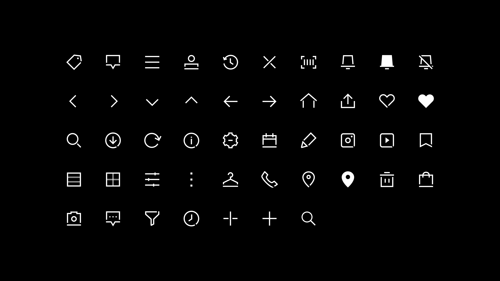
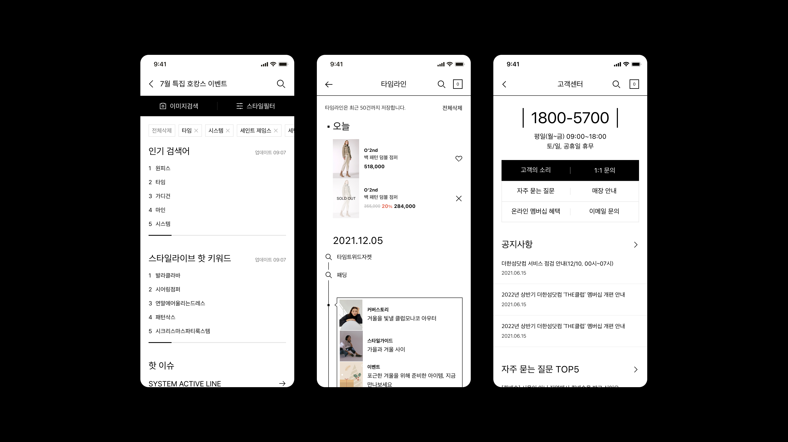
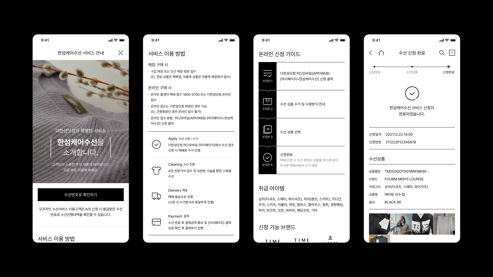
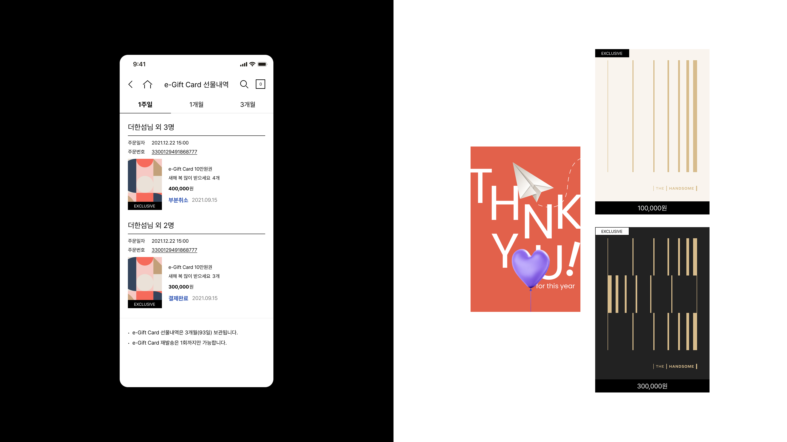

UX/UI
TheHandsome.com, a Fashion E-commerce App

App, Interaction
Agency: Di9coms
Client: TheHandsome.com
Agency: Di9coms
Client: TheHandsome.com
Collaborated with product managers and developers to redesign the THE HANDSOME e-commerce app,
creating UI assets and designing key pages across the platform.
Focused on a clean, minimal visual system that made information easier to navigate while refining and expanding the brand's iconography to improve consistency throughout the experience.




